Schrodinger Academy Maestro 11 Tutorials
Introduction to Structure Preparation and Visualization
This tutorial gives an introduction to the Maestro interface and basic visualization tasks. You will learn how to prepare ligand and protein structures for modeling projects. Words found in the Glossary of Terms are written in blue, file names are in green, and items that are clicked or typed are bolded.
Created with: Release 16-3
Prerequisites: Access to Maestro 11 (Release 16-2 or higher)
Files supplied: 1FJS.pdb
This tutorial comprises the following six parts:
- Creating projects and importing structures - Maestro
- Preparing protein structures - Protein Preparation Wizard
- Preparing ligand structures - LigPrep
- Visualizing protein-ligand complexes - Maestro
- Conclusion and References
- Glossary of Terms
1. Creating Projects and Importing Structures
Projects (*.prj extension) are the main file format for Maestro. A project file may contain numerous entries corresponding to imported structures, as well as the output of modeling-related tasks. Once a project is created, the project file is automatically saved each time a change is made.
1.1 Create a project in the Working Directory
At the start of each session, change the file path to your chosen working directory in Maestro. This makes file navigation easier. Every session in Maestro begins with a default Scratch Project. Scratch Projects are temporary and not saved; you will have to name the Scratch Project in order to save all subsequent work.
- Double-click the Maestro icon
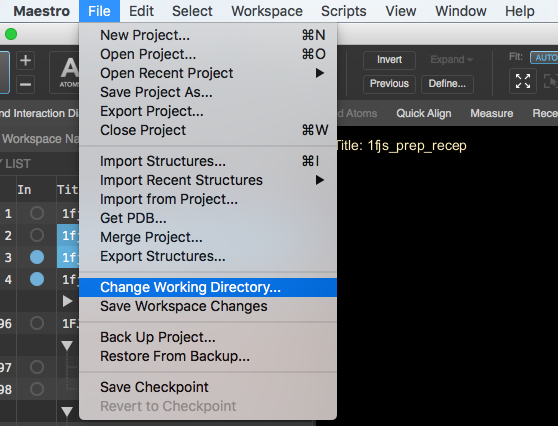 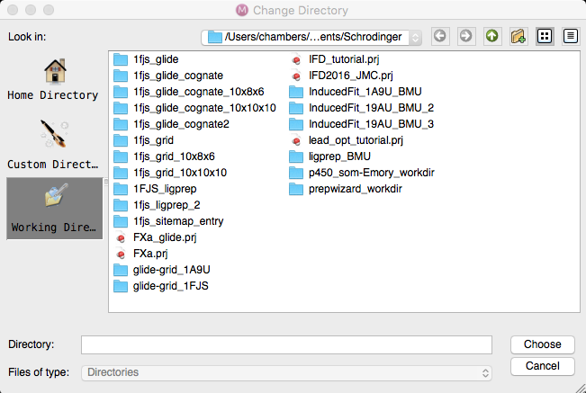
Figure 1-1. Change Working Directory option and dialog.
- Navigate to File > Change Working Directory…, select your directory and click Choose...
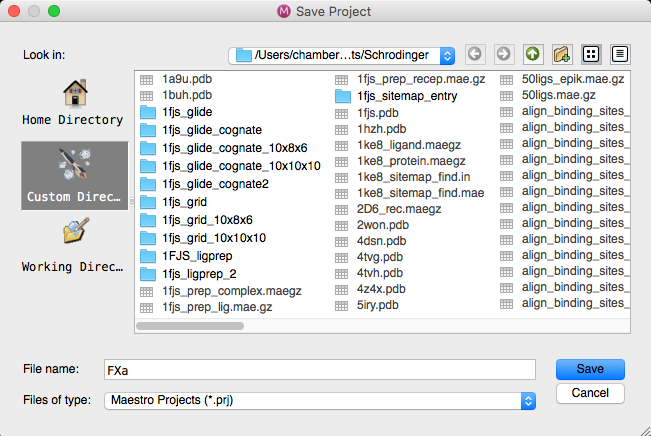
Figure 1-2. Save Project dialog.
- File > Save Project As
- Change the File name to “FXa”, click Save
- The project is now named FXa.prj
1.2 Import Structures
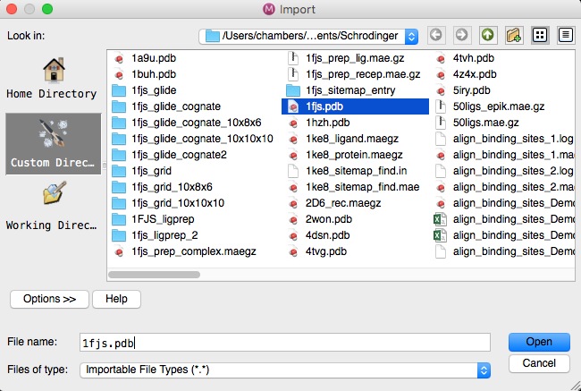
Figure 1-3. Import Structures dialog.
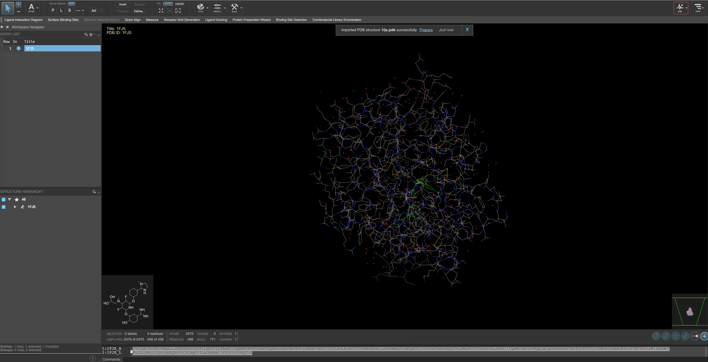
Figure 1-4. Workspace after structure is imported.
- File > Import Structures… to load structure from a local file.
- Select the file 1FJS.pdb from your working directory.
- Click Open
- The protein structure is in the Workspace
- A banner will appear confirming the structure has been imported and prompting a common next step, preparing the protein. This will be covered in the following section.
Note: If you have access to the internet, you can use File > Get PDB and enter “1FJS” into the textbox instead.
Note:*.mae and *.mae.gz files are the default structure file formats for Maestro. However, all common structure file types are supported.
The imported structure is automatically added to the Entry List and Project Table. The Entry List is located to the left of the Workspace. The Project Table can be accessed by Ctrl+T or Window > Project Table… if you would like to see an expanded view of your project data.
By default, the structure corresponding to the imported file is both included in the Workspace and selected in the Entry List.
2. Preparing the Protein Structure Using the Protein Preparation Wizard
Structure files obtained from the PDB, vendors, and other sources often lack necessary information for performing modeling-related tasks. Typically, these files are missing hydrogens, partial charges, side chains, and/or whole loop regions. In order to make these structures suitable for modeling tasks, we use the Protein Preparation Wizard to resolve issues.
2.1 Import and process the protein structure
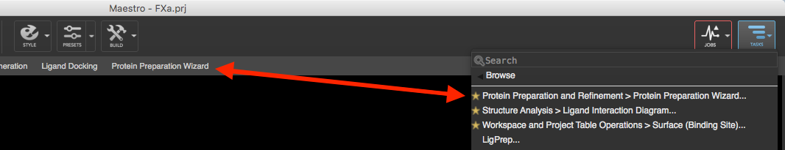
Figure 2-1. A task is starred (right side) in order to save it to the Favorites Bar (left side).
The Protein Preparation Wizard (PPW)offers processing, modification and refinement tools. We will use the 1FJS.pdb file as our starting point.
- Click Protein Preparation Wizard on the Favorites toolbar
- The Protein Preparation Wizard opens in a new dialog
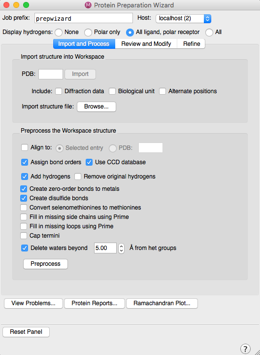
Figure 2-2. “Import and Process”tab of the Protein Preparation Wizard panel.
- Click Preprocess
- A new entry is added to the Entry List and is included in the Workspace
- Click OK when the Protein Preparation - Problems dialog opens. The overlapping atoms are fixed in a later step.
Note: The ligand bond order is fixed in the 2D Overlay panel.
2.2 Review and Modify the structure
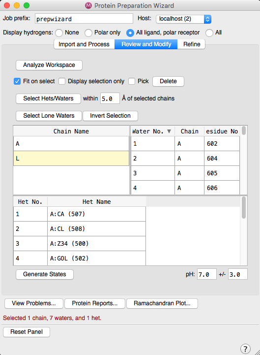
Figure 2-3. “Review and Modify”tab of the Protein Preparation Wizard is shown with Chain L selected.
The “Review and Modify” tab shows you all the components of the complex, in separate sections: Chains, Waters, Ligands, and Hets. Here, you can choose which portions of the complex to keep or remove.
- Navigate to the “Review and Modify” tab
- Select the row for chain L and click Delete to remove the smaller of the two chains
- Select all rows for waters using shift-click, then click Delete
- Select all rows containing GOLs in the Hets table using shift-click, then click Delete
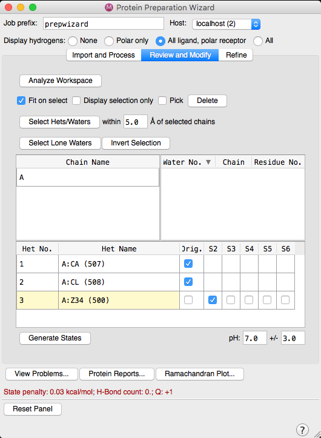
Figure 2-4. S2 State of the ligand is picked in the “Modify and Review” tab.
- Select the row A:Z34 (500) in the Hets table and click Generate States to generate states for the co-crystallized ligand
- The Epik program starts and may be seen at the foot of the Panel (red font) as Running Epik…
- Once the states have been generated, the table updates with extra information S2 to S6. Each box can be picked in turn to show the State of the ligand in the Workspace.
- Select the lowest penalty state by ensuring the S2 box is checked
2.3 Refine the prepared structure
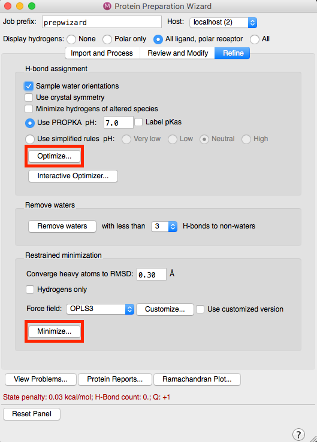
Figure 2-5. “Refine” tab of Protein Preparation Wizard.
The “Refine” tab allows for more detailed modifications to the PDB structure. The H-bond assignment section is used for optimizing the hydrogen bonding network – a process which samples water orientations and flips Asn, Gln, and/or His side chains at a specified pH value. Adjusting the pH will change the protonation states of residues and ligands accordingly, and is useful if you want to accurately reflect the experimental conditions. The Restrained minimization section fixes clashes that can occur with adding hydrogens or filling missing sidechains. By default, an RMSD of 0.3 Å is used, minimizing both the hydrogens and heavy atoms via harmonic penalty constraints. Optionally, hydrogen-only minimization can be chosen.
- Navigate to the Refine tab
- Click “Optimize...” (This step takes about a minute to complete.)
- A new entry is added and included. The overlapping atoms have been corrected, and side chains that have been flipped are now labeled in the Workspace.
Note: Clicking Interactive Optimizer... allows you to adjust any H-bond assignment.
- Finally, click Minimize...
- Close the PPW
- In the Entry List, rename the minimized structure to 1FJS_refined by double-clicking on the title.
- This entry is now ready to be used for downstream modeling tasks.
Note: Although we have concentrated on visualizing the steps of Protein Preparation in the Maestro Workspace, it should be noted the PT (ctrl-T) also contains properties - check boxes - pertaining to each step performed in the Wizard. The Property Tree icon reveals this information. Use the Property Tree and check the properties under the category Protein Preparation Wizard (primary and secondary) to see how the final prepared structure has check boxes ticked corresponding to the steps performed in the PPW. See Figure 3-4 for more details.
3. Preparing a Ligand Structure
We will prepare the co-crystallized ligand from 1FJS for use in virtual screening. This is a typical step for cognateligand docking, as it provides important validation prior to screening a larger ligand data set.
The following steps provide an example of how you would prepare a ligand data set using LigPrep. Ligand files can be sourced from numerous places, such as vendors or databases, often in the form of 1D or 2D structures with unstandardized chemistry. Before being used in a virtual screen, ligands must be converted to 3D structures, with their chemistry properly standardized and extrapolated.
3.1 Split the refined structure into separate ligand and protein entries
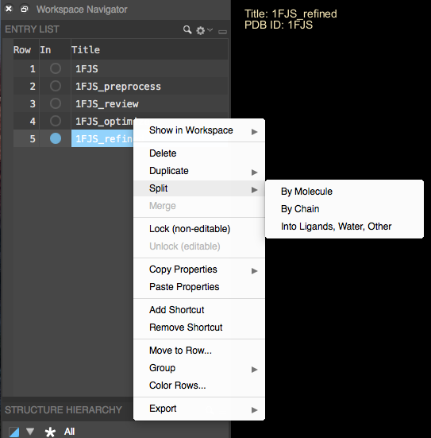
Figure 3-1. Splitting entries in the project table. The blue row shows it is selected, and the menu appears on right-click.
- Right-click on the 1FJS_refined entry in the Entry List
- Select Split > Into Ligands, Water, Other from the popup menu
- Two new entries appear in the Entry List, one containing the ligand and one the protein. Both are selected and included in the Workspace.
3.2 Access LigPrep
- Include only the entry “1FJS_refined_ligand” by clicking its “In” circle
- Click Tasks in the upper right corner, then Browse > LigPrep… (in the Applications column)
- The LigPrep panel opens
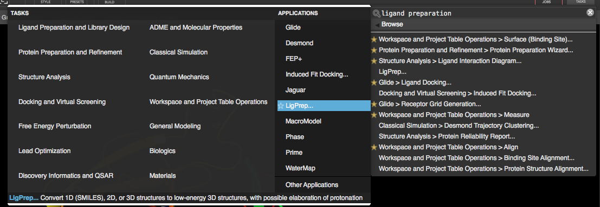
Figure 3-2. LigPrep… in the Browse menu of the Task Tool.
3.3 Extrapolate Ligand Structures
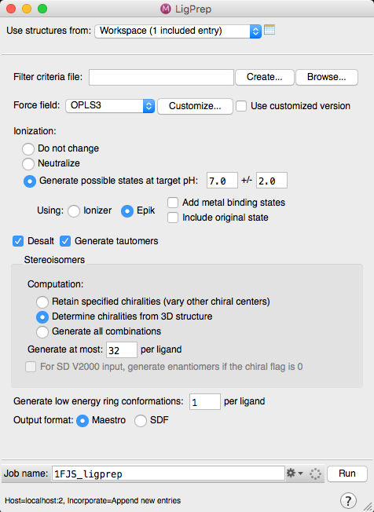
Figure 3-3. LigPrep Panel.
- In the “Use structures from” dropdown, select Workspace (1 included entry)
- Ensure the Desalt and Generate Tautomers boxes are checked
- Ensure Stereoisomers are set to Determine chiralities from 3D structure
- Change the job name to 1FJS_ligprep and click Run
- A banner appears in the workspace when the job has incorporated
- A new group containing the prepared ligands is appended to the Entry List. The number of ligands in this group is shown in parenthesis.
This group contains the prepared ligand structures with various ionization states, tautomers, stereo chemistries, etc. You can proceed with these prepared ligand structures for further modeling activities.
Note: The Tile functionality is very useful in order to see the slight variations in chemistry for the generated structures. The Tile View can be turned on in the Workspace Configuration panel.
Since this tutorial is only intended to demonstrate the protein and ligand preparation protocol, we will not perform any additional tasks on the prepared structures. The prepared 1FJS and prepared ligand can be used in the Structure-Based Virtual Screening using Glide tutorial.
Note: The Project Table also contains properties pertaining to each step performed in the LigPrep interface. This information can be viewed by clicking the Property Tree icon and checking the properties for LigPrep category. The columns in the Project Table will reflect your choices from the Property Tree.
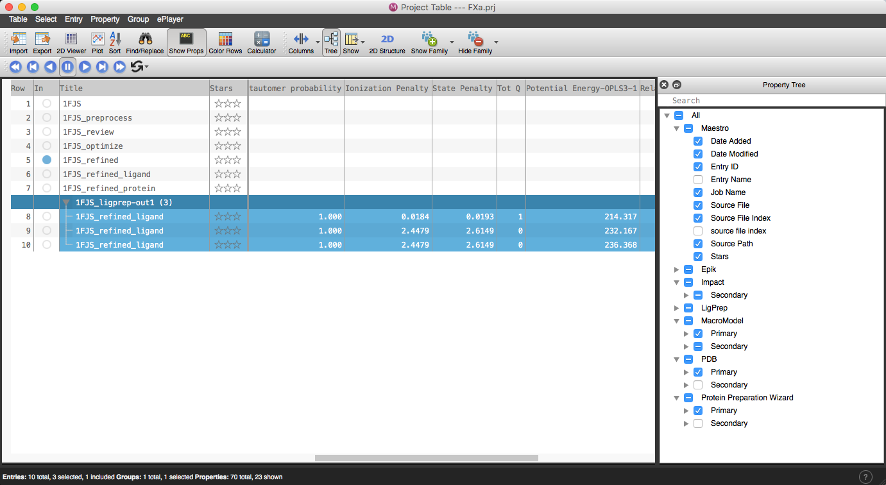
Figure 3-4. Property Tree in the PT.
Note: The Job Monitor panel can be accessed at any point to view details about a job. For instance, a LigPrep job will show each step of the process iteratively. It will also summarise the total number of output entries, including listing any structures it was not able to extrapolate.
4. Visualizing protein-ligand complexes
4.1 Use the Style Options
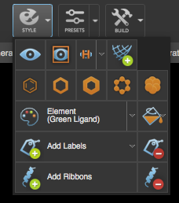
Figure 4-1. The Style toolbox.
Workspace visualization can be changed in a number of ways using the Style toolbox.
- Include entry 1FJS_refined in the Workspace
- Type L on your keyboard to set the view to the ligand
- Select the ligand by clicking L in the Quick Select area of the Selection Toolbar
- In the Style Toolbox, select the CPK representation
- The ligand is now in space-filling (CPK) mode
- This will only be applied to the ligand, since nothing else is selected in the Workspace
- While the ligand is still selected, in the Style Toolbox, click the Color Scheme dropdown, navigate to Element (Custom Ligand), and select Pink from the secondary menu
- The ligand carbon atoms are now pink
- Type Z on your keyboard to set the view to the whole structure
- Select the protein by clicking P in the Quick Select area
- In the Style Toolbox, choose Add Ribbons
- Right-click any part of the ribbon
- The Edit Ribbon dialog will open
- In Color Scheme, choose Single Color and click on the color box that appears on the right to change the ribbon to blue.
Note: Use the predictive highlighting to know when you will click on the ribbon.
4.2 Apply a Preset style
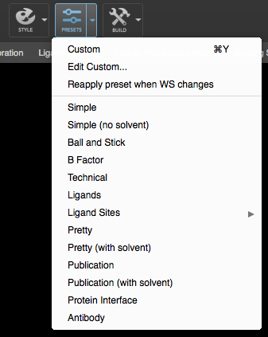 `
Figure 4-2. The Presets dropdown menu, where Custom preset can be edited.

Figure 4-3. Workspace is rendered using Presets option. The protein is shown represented as a ribbon, with residues near the ligand depicted as lines. Ligand molecules are rendered as ball and stick.
Maestro offers a number of Preset styles similar to PyMOL that facilitate easy visualization. They can be used in a variety of ways, from de-cluttering your image to creating publication-quality images.
- Click Presets
- The Workspace is re-rendered, showing the ligand with nearby active site residues and the remaining protein in ribbon
- Click the Presets drop-down menu to explore other styles
4.3 Visualize Hydrogen Bonds
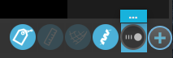
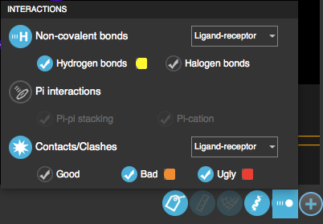
Figure 4-3. The Interactions Panel gives full control over settings.
The Workspace Configuration toolbar in the bottom right corner of the Maestro panel allows control over displaying interactions.
- Hover over the Interactions icon
- Click the ... above Interactions, for full access to settings
- In the Interactions Panel, choose the Hydrogen bonds option. The default setting is hydrogen bonds between the Ligand-receptor.
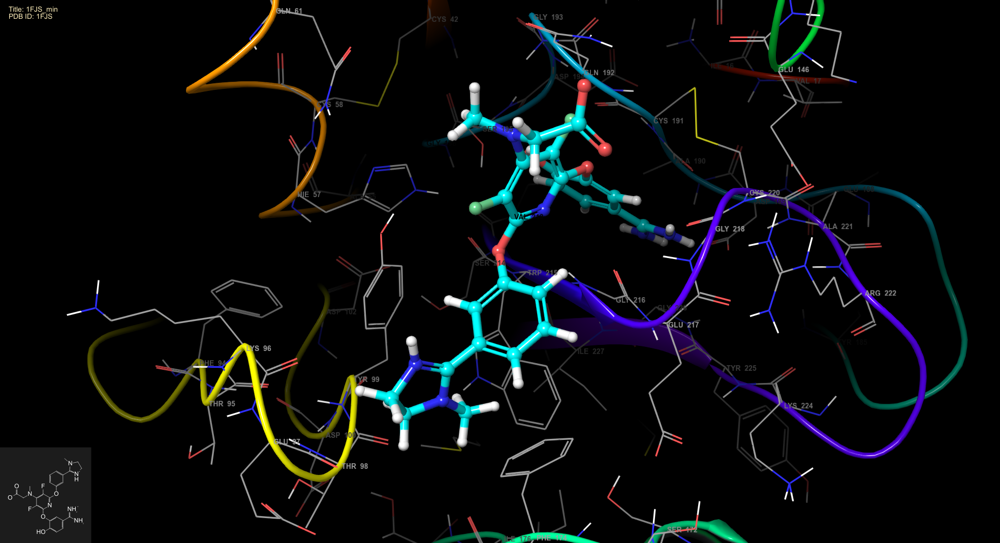
Figure 4-4. Hydrogen bond visualization between the ligand and the receptor.
In the Workspace, hydrogen bonds are represented as yellow dashed lines.
Note: Clicking on the yellow box next to Hydrogen bonds will open the Preferences dialog, where the interaction visualization can be customized.
4.4 Visualize Van der Waals contacts
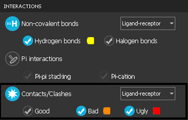
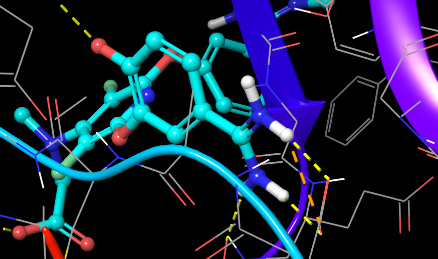
Figure 4-5. Visualizing van der Waals contacts between the ligand and the receptor.
- In the Interactions panel, choose Contacts/Clashes
Potential Contacts/Clashes are shown within a defined distance. By default, “ugly” and “bad” contacts are represented as red and orange dashed lines, respectively. The default thresholds are set to 0.75 for “ugly” and 0.89 for “bad”. These values correspond to the ratio of the distance between the two atoms and the sum of their van der Waals radii.
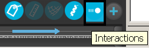
- Hide all interactions by clicking on Interactions in the Workspace Configuration toolbar
4.5 Surface generation and manipulation
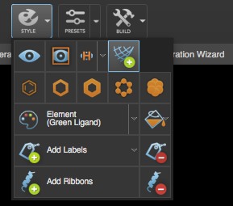
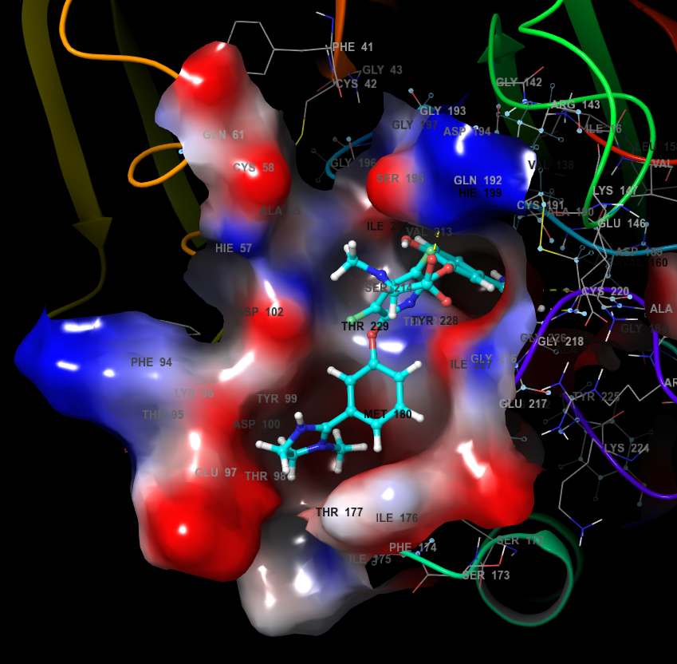
Figure 4-6. Visualizing the Electrostatic Surface
A binding site surface can be generated with the Style toolbox and edited using right-click menu options.
- On the Quick Select Toolbar: "..." > Binding Sites
- Style > Add Molecular Surface
- A solid gray surface appears over the binding site atoms.
Note:Clicking Surface (Binding Site) in the Favorites Bar will allow you to quickly add a surface to the binding site and/or ligand.
- To modify the surface, right-click the surface in the Workspace(find a location with no atoms or ribbons)
- Select Display Options... in the popup menu
- The Surface Display Options dialog appears
- From the Color Scheme dropdown, choose Electrostatic Potential
- Change the Min and Max values to -0.1 and 0.1, respectively, and press OK
- The intensity of the surface colors is increased
- Click OK to save the changes
Note: Import... in the Manage Surface table also allows the import of electron density files for viewing in Maestro. Files can be of various formats including *vis, *plt, *cns, *map, *ccp4.
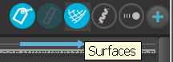
- Hide the surface by clicking Surfaces on the Workspace Configuration toolbar
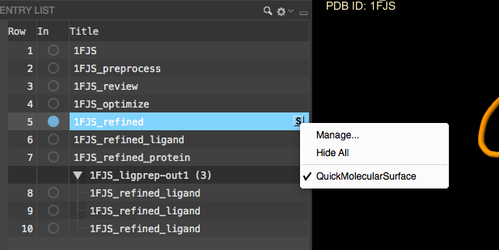
Figure 4-7. Clicking a generated surface or the S in the Entry List, facilitates hiding/showing and managing the surface.
Note: If you have more than one surface and want to hide some and not others, click the S that appears in the Project Table and Entry List for more options.
4.6 Generate a 2D interaction diagram
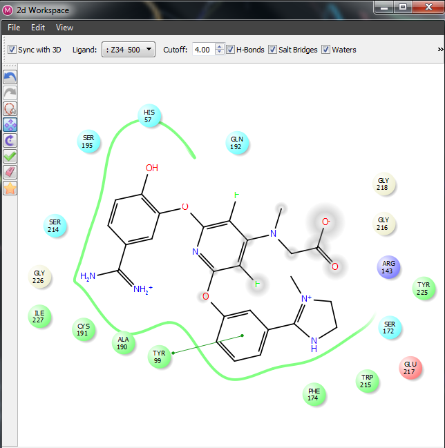
Figure 4-8. The 2D Workspace.
The 2D Workspace panel shows the 2D rendering of the 3D receptor-ligand Workspace. This can be accessed via Ligand Interaction Diagram in the Favorites Bar.
In the Ligand Interaction Diagram, residues are represented as colored spheres, where the number of visible sphere can be managed using the Cutoff ption. Rotating the complex in the Maestro 3D Workspace automatically updates the 2D Workspace view to reflect the new rotation if the Sync with 3D option is selected. All options can be found in View > LID Legend.
- Images can be saved via File > Save Screenshot
4.7 Save an image of the workspace
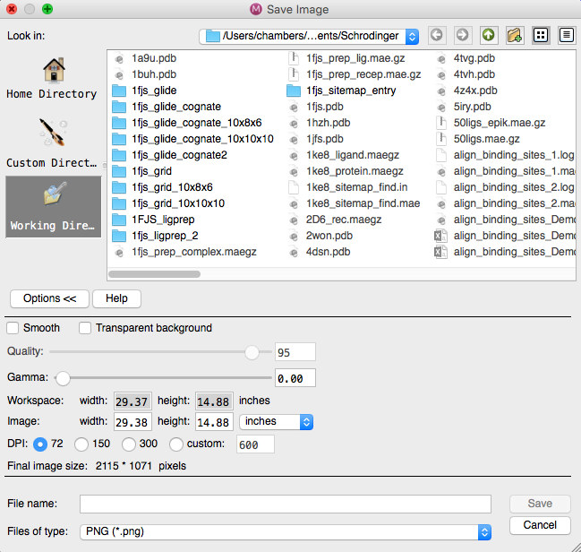
Figure 4-9. The Save Image panel, with the Options panel open.
Create an image of the workspace view by navigating to
- Workspace > Save Image As...
Advanced options such as the image size and quality (DPI) or background transparency and image smoothing can be found in the Save Image Panel using
- Options >>
5. Conclusion and References
In this tutorial, we imported and prepared a protein and ligand file, then used Maestro for simple visualization. A raw PDB file was made suitable for modeling purposes using the Protein Preparation Wizard, and the cognate ligand was extrapolated using LigPrep in the same fashion that would be used for a multi-ligand file. These steps would be the starting point for many computational experiments, including docking (Glide), molecular dynamics simulations (Desmond), and lead optimization (Prime, MMGBSA). Maestro was able to make many changes to the appearance of the protein and ligand using the Style toolbar, Preset options, the Workspace Configuration toolbar, and the 2D Workspace.
Quick Start and User Manuals
Video Guides
Other tutorials
Maestro Quick Learn Tasks
6. Glossary of Terms
cognate ligand docking - docking a ligand that is a known binder into its protein target
Entry List - a simplified view of the Project Table that allows you to perform basic operations such as selection and inclusion
included - the entry represented in the Workspace, the circle in the “Included” column is blue
incorporated - once a job is finished, output files are then copied back to the working directory
Project Table - displays the contents of a project and is also an interface for performing operations on selected entries, viewing properties, and organizing structures/data
Scratch Project - a temporary project in which work is not saved, closing a scratch project removes all current work and begins a new scratch project
selected - the entry is chosen in the Entry List, the row is blue, operations will be performed on all selected entries.
Working Directory - the location that files are saved
Workspace - the 3D display area in the center of the main window, where molecular structures are displayed